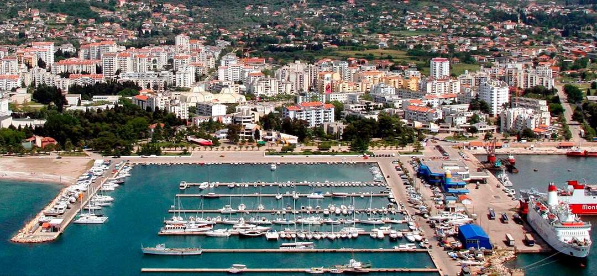
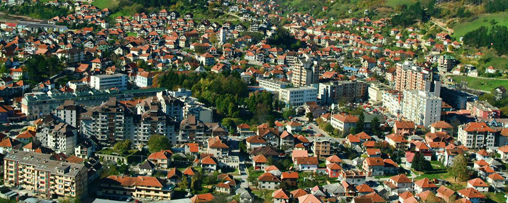
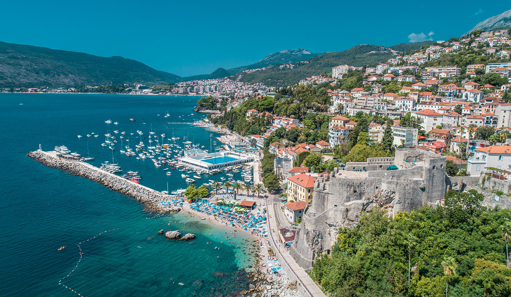
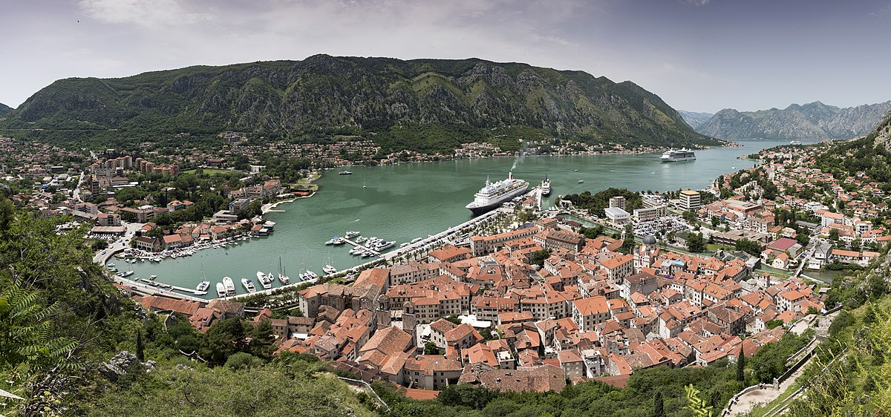
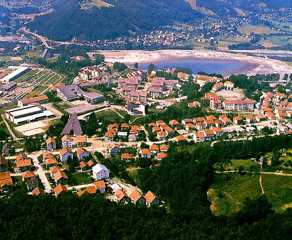
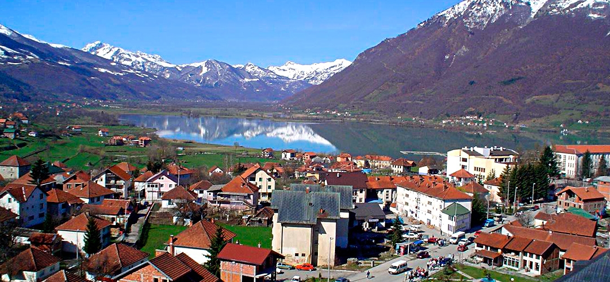
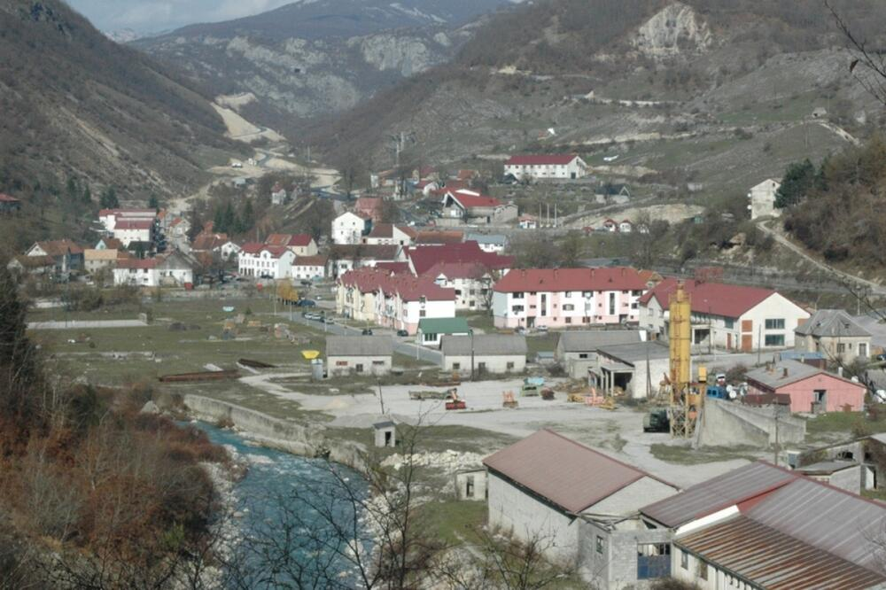
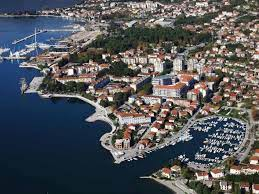
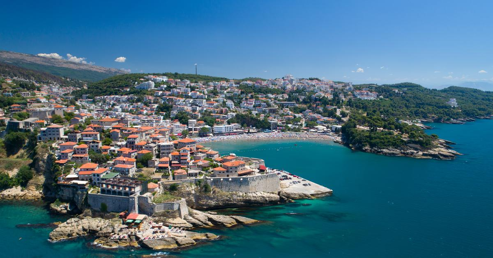

| 1 |
Andrijevica
|
Centralni |
1073 |
- Nacionalni park Biogradska gora
- Planinski lanac Komovi
- Ski centar Kolasin
|
 |
| 2 |
Bar |
Jug |
13719 |
- Dvorac Kralja Nikole
- Staro drvo Masline
- Stari grad Bar
|
 |
| 3 |
Berane
|
Sjever |
11776 |
- Djurdjevi Stupovi
- Jasikovac
- Polimski muzej
|
 |
| 4 |
Bijelo Polje
|
Sjever |
15883 |
- Biogradsko jezero
- Djalovica pecina
- Vidikovac Bendovac
|
 |
| 5 |
Budva
|
Jug |
10918 |
- Stari grad Budva
- Plaza Jaz
- Ostvro Sveti Nikola
|
 |
| 6 |
Cetinje
|
Centralni |
14057 |
- Manastir Cetinje
- Muzej Kralja Nikole
- Biljarda
|
 |
| 7 |
Danilovgrad
|
Centralni |
5208 |
- Manastir Ostrog
- Manastir Zdrebaonik
- Platije
|
 |
| 8 |
Herceg-Novi
|
Jug |
12739 |
- Stari grad Herceg-Novi
- Manastir Savina
- Tvrdjava Forte Mare
|
 |
| 9 |
Kolasin
|
Centralni |
2989 |
- Manastir Cirilovac
- Botanicka Basta Dulovine
- Etne Selo Bijeli Potok
|
 |
| 10 |
Kotor
|
Jug |
974 |
- Stari grad Kotor
- Pomorski muzej Crne Gore
- Katedrala Svetog Tripuna
|
 |
| 11 |
Mojkovac
|
Sjever |
1073 |
- Znamenitost 1
- Znamenitost 2
- Znamenitost 3
|
 |
| 12 |
Niksic
|
Centralni |
58212 |
- Jezero Krupac
- Trebjesa
- Carev Most
|
 |
| 13 |
Petnjica
|
Sjever |
539 |
- Znamenitost 1
- Znamenitost 2
- Znamenitost 3
|
 |
| 14 |
Plav
|
Sjever |
3615 |
- Nacionalni park Prokletije
- Plavsko jezero
- Kula Redzepagica
|
 |
| 15 |
Pluzine
|
Sjever |
1494 |
- Park Prirode Piva
- Pivsko jezero
- Znamenitost 3
|
 |
| 16 |
Pljevlja
|
Sjever |
19136 |
- Dzamija Husein Pase
- Manastir Sveta Trojica
- Zavicajni muzej Pljevlja
|
 |
| 17 |
Podgorica
|
Centralni |
185937 |
- Hram Hristovog vaskrsenja
- Sahat kula
- Most Milenijum
|
 |
| 18 |
Rozaje
|
Sjever |
9121 |
- Zavicajni muzej Granica kula
- Znamenitost 2
- Znamenitost 3
|
 |
| 19 |
Savnik
|
Sjever |
570 |
- Znamenitost 1
- Znamenitost 2
- Znamenitost 3
|
 |
| 20 |
Tivat
|
Jug |
9467 |
- Porto Montenegro
- Ostrvo Sveti Marko
- Miholjska prevlaka
|
 |
| 21 |
Ulcinj
|
Jug |
10828 |
- Ada Bojana
- ZStari grad Ulcinj
- Muzej istorije Ulcinj
|
 |
| 22 |
Zabljak
|
Sjever |
1937 |
- Nacionalni park Durmitor
- Crno jezero
- Riblje jezero
|
 |